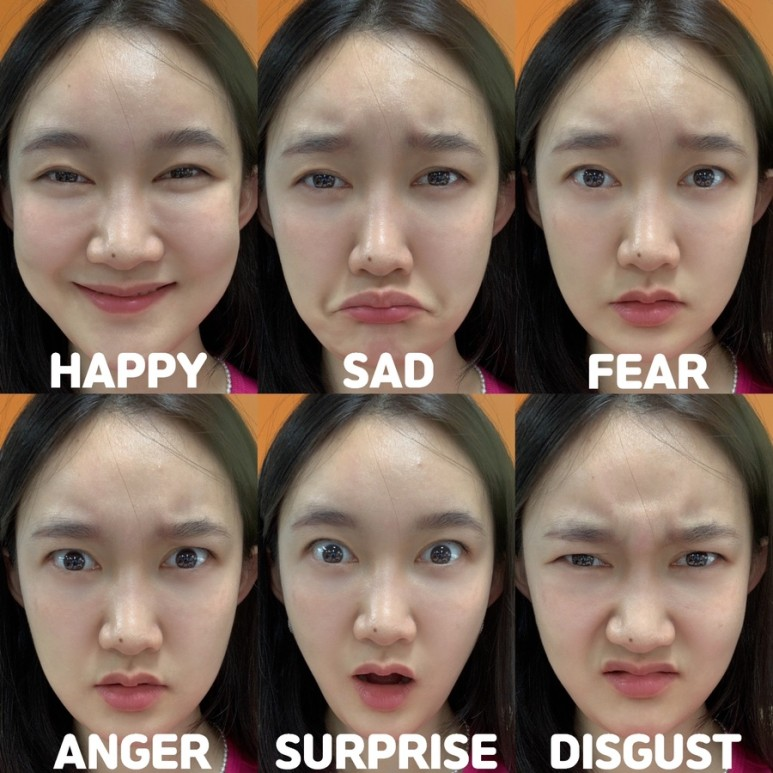

미국의 정서 심리학자 폴 에크만의 연구에 따르면 인간에게는 보편적인 6가지의 감정이 존재합니다.
기쁨, 슬픔, 두려움, 분노, 놀람, 혐오가 이에 해당되지요.
이는 문명의 손길이 닿지 않은 원주민 포레 족에게도 같은 결과가 나타났습니다.
즉, 인간의 감정은 표정을 통해 본능적으로 표현된다는 것을 알 수 있습니다.

엔트리를 통한 감정을 맞추는 인공지능 만들기
엔트리를 통해 인간의 감정을 맞추는 인공지능을 만들어 봅시다.
먼저 체험하기 과정을 통해 감정을 맞추는 AI를 경험한 후,
만들기 과정을 통해 머신러닝에 대해 학습합니다.
마지막으로 코드를 보지 않고 수행해 보아요.